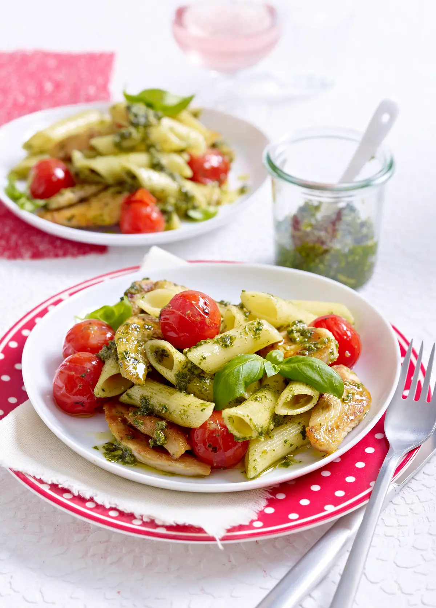

Penne mit Hähnchen und Pesto Rezept

Beschreibung
- 1 Knoblauchzehe
- 1 Basilikum
- 30 g Pinienkerne
- 30 g geriebener Parmesan
- 6 EL Olivenöl Salz
- 400 g Penne Nudeln
- 300 g Kirschtomaten
- 250 g Hähnchenfilet
- Pfeffer
- Salz
-
Knoblauch schälen, Basilikum waschen, trocken schütteln, Blättchen
abzupfen und einige zum Garnieren beiseitelegen. Pinienkerne in einer
Pfanne ohne Fett rösten und herausnehmen. Basilikum, Pinienkerne,
Knoblauch, 5 EL Öl und Parmesan pürieren, bis ein dünnflüssiges Pesto
entsteht. Mit Salz abschmecken
-
Nudeln in kochendem Salzwasser nach Packungsanweisung zubereiten.
Tomaten waschen, putzen und trocken reiben. Fleisch waschen, trocken
tupfen und in dünne Scheiben schneiden. 1 EL Öl in einer Pfanne
erhitzen, Fleisch darin 3–4 Minuten unter Wenden scharf anbraten. Mit
Salz und Pfeffer würzen und aus der Pfanne nehmen
-
Tomaten in die gleiche Pfanne geben und ca. 3 Minuten braten, bis die
Haut aufplatzt. Mit Salz und Pfeffer würzen. Nudeln abgießen. Hähnchen,
Pesto und Nudeln zu den Tomaten in die Pfanne geben. Evtl. 1–2 EL Wasser
zugeben und alles nochmals erhitzen. Nudeln auf Tellern anrichten und
mit übrigem Basilikum garnieren